<title>Eva by WearMeds</title>
<meta name="claude:viewport-fit-sides" content="cover">
<link rel="preconnect" href="https://fonts.googleapis.com">
<link rel="preconnect" href="https://fonts.gstatic.com" crossorigin>
<link href="https://fonts.googleapis.com/css2?family=Inter:wght@400&display=swap" rel="stylesheet">
<style>
/* Layout: Two Create "objects at exhibition scale" — warm canvas, 400-weight grotesk at 111/66.6/44.4/33.3/22.2, wide-and-detail media diptychs, display inventory, monumental identity footer. Dark theme = the system's reversed canvas. */
:root{
  --canvas:#f9f7f4; --ink:#0c0c0c; --rule:#e3e1dd; --muted:rgba(12,12,12,.58);
  --stage:#221a2b; /* media backing for isolated objects: one product world */
  --font:"PP Neue Montreal","Inter",Arial,sans-serif;
  --t-display:clamp(44px,7.71vw,111px);
  --t-prop:clamp(30px,4.627vw,66.6px);
  --t-sec:clamp(24px,3.085vw,44.4px);
  --t-label:clamp(17px,2.315vw,33.3px);
  --t-util:clamp(15px,1.543vw,22.2px);
  --ease:cubic-bezier(.645,.045,.355,1);
}
@media (prefers-color-scheme:dark){:root:not([data-theme="light"]){--canvas:#0c0c0c;--ink:#f9f7f4;--rule:#3d3d3d;--muted:rgba(249,247,244,.6);color-scheme:dark}}
:root[data-theme="dark"]{--canvas:#0c0c0c;--ink:#f9f7f4;--rule:#3d3d3d;--muted:rgba(249,247,244,.6);color-scheme:dark}

*{box-sizing:border-box}
body{background:var(--canvas);color:var(--ink);font:400 var(--t-util)/1.1 var(--font);-webkit-font-smoothing:antialiased}
h1,h2,h3,p,ul{margin:0;padding:0;font-weight:400}
a{color:inherit;text-decoration:none}
:focus-visible{outline:2px solid var(--ink);outline-offset:4px}
.g{padding-left:max(20px,env(safe-area-inset-left,0px));padding-right:max(20px,env(safe-area-inset-right,0px))}

/* Split navigation */
body::before{content:"";position:fixed;inset:0 0 auto;height:env(safe-area-inset-top,0px);z-index:10;background:var(--canvas)}
.nav{position:sticky;top:env(safe-area-inset-top,0px);z-index:400;height:72px;background:var(--canvas);border-bottom:1px solid var(--rule);display:flex;justify-content:space-between;align-items:center;font-size:var(--t-sec);letter-spacing:-.01em;transition:background-color .5s,border-color .5s}
.nav a{line-height:1}

/* Promise */
.promise{padding-block:20px 180px}
.promise h1{font-size:var(--t-display);line-height:1.02;letter-spacing:-.01em;max-width:76%}
.promise .ln{display:block}
@media (max-width:760px){.promise{padding-block:20px 96px}.promise h1{max-width:none}.promise .ln{display:inline}}

/* Ruled section header */
.sh{display:flex;justify-content:space-between;align-items:flex-start;gap:20px;border-top:1px solid var(--rule);padding-top:14px;min-height:72px;font-size:var(--t-sec);line-height:1.02;letter-spacing:-.01em}
.sh .act{text-transform:uppercase;white-space:nowrap}
.sh .act::before{content:"+ "}
.sh button.act{font:inherit;color:inherit;background:none;border:0;padding:0;cursor:pointer}

/* Media */
.m{position:relative;overflow:hidden;background:var(--stage);margin:0}
.m img{display:block;width:100%;height:100%;object-fit:cover}
.m .ai{position:absolute;right:10px;bottom:8px;font-size:12px;line-height:1;color:rgba(255,255,255,.72);letter-spacing:.02em;pointer-events:none}
.m.obj img{object-fit:contain;padding:9%}
.m.obj{background:radial-gradient(70% 60% at 30% 25%,#3a2d47 0%,var(--stage) 70%)}
.hero-media{width:100%;aspect-ratio:16/9}
.hero-media img{transform:scale(1.04);transition:transform 1.6s var(--ease)}
.hero-media.in img{transform:scale(1)}

/* Diptych */
.dip{display:grid;grid-template-columns:1fr 1fr;gap:20px;padding-block:20px 50px}
.dip .wide{grid-column:1 / -1;aspect-ratio:3/2}
.dip .detail{aspect-ratio:1/1}
.dip .txt{display:flex;flex-direction:column;justify-content:flex-start;gap:5px;padding:0 10px;min-width:0}
.dip.flip .detail{order:2}.dip.flip .txt{order:1}
.label{font-size:var(--t-label);line-height:1.1;text-transform:uppercase}
.prop{font-size:var(--t-prop);line-height:1.02;letter-spacing:-.01em;text-wrap:balance}
.note{font-size:var(--t-util);line-height:1.25;color:var(--muted);max-width:30em;margin-top:24px}
@media (max-width:760px){.dip{grid-template-columns:1fr}.dip.flip .detail{order:0}.dip .detail{aspect-ratio:4/3}}

/* Station: three lit bays + live screen copy */
.station .f{position:absolute;inset:0;opacity:0;transition:opacity .7s ease-in-out}
.station .f.on{opacity:1}
.station .f:first-child{opacity:1}
.station .scr{position:absolute;left:16.6%;top:7.3%;width:41.7%;height:32.7%;display:flex;flex-direction:column;justify-content:center;gap:.5em;padding:0 5%;color:#f9f7f4;font-size:clamp(12px,1.9vw,27px);line-height:1.1}
.station .scr small{font-size:.55em;letter-spacing:.08em;text-transform:uppercase;color:#ffcb77}
.station .scr span{transition:opacity .45s ease-in-out}
.bays{display:flex;gap:20px;flex-wrap:wrap;margin-top:24px;font-size:var(--t-util)}
.bays button{font:inherit;color:var(--muted);background:none;border:0;padding:0 0 2px;cursor:pointer;background-image:linear-gradient(var(--ink),var(--ink));background-size:0 1px;background-position:0 100%;background-repeat:no-repeat;transition:background-size .45s var(--ease),color .3s}
.bays button[aria-pressed="true"]{color:var(--ink);background-size:100% 1px}

/* Link and solar overlays */
.s4 .link{position:absolute;inset:0;opacity:0;transition:opacity 1.4s ease-in-out;mix-blend-mode:screen}
.s4.in .link{opacity:1}
.s3 .stream{position:absolute;left:-10%;top:18%;width:80%;opacity:.85;mix-blend-mode:screen;animation:drift 9s ease-in-out infinite alternate}
@keyframes drift{from{transform:translateX(-4%)}to{transform:translateX(8%)}}
.s5 svg{position:absolute;inset:0;width:100%;height:100%}
@media (prefers-reduced-motion:reduce){.s3 .stream{animation:none}.s5 .pulse{display:none}.hero-media img{transform:none}}

/* Editorial chapter */
.ed{display:grid;grid-template-columns:1fr 1fr;gap:20px;padding-block:20px 180px}
.ed .prop{padding:0 10px}
.ed .body{font-size:var(--t-label);line-height:1.1;padding:0 10px;display:grid;gap:40px;min-width:0}
.ed .body p{text-wrap:pretty}
@media (max-width:760px){.ed{grid-template-columns:1fr;gap:40px}}

/* Display inventory */
.inv{position:relative;padding-block:20px 180px}
.inv ul{list-style:none;position:relative;z-index:1}
.inv li{font-size:var(--t-prop);line-height:1.02;letter-spacing:-.01em}
.inv li button{font:inherit;letter-spacing:inherit;color:inherit;background:none;border:0;padding:0 10px;cursor:pointer;text-align:left}
.inv li small{display:block;font-size:var(--t-util);color:var(--muted);letter-spacing:0;padding:4px 10px 14px}
.inv li small[hidden]{display:none}
.inv .pv{position:absolute;right:max(20px,8vw);top:40px;width:min(430px,34vw);aspect-ratio:4/5;z-index:2}
.inv .pv img{transition:opacity .35s ease-in-out}
@media (max-width:760px){.inv .pv{position:relative;right:auto;top:auto;width:100%;margin-top:24px;aspect-ratio:1/1}}

/* Closing */
.close{padding-block:0 180px;display:grid;gap:40px}
.close p{font-size:var(--t-sec);line-height:1.02;letter-spacing:-.01em;max-width:16em}
.close ul{list-style:none;display:grid;gap:6px}
.close a{font-size:var(--t-sec);line-height:1.02;letter-spacing:-.01em;display:inline-flex;align-items:flex-start;gap:.3em;transition:padding-left .3s}
.close a:hover{padding-left:10px}
.close a svg{width:.9em;height:.9em;flex:none;margin-top:.08em}

/* Monumental identity footer */
.foot{padding-bottom:20px}
.mark{border-top:1px solid var(--rule);border-bottom:1px solid var(--rule);padding-block:20px}
.mark svg{display:block;width:100%;height:auto}
.util{display:flex;justify-content:space-between;gap:20px;flex-wrap:wrap;padding-top:14px;font-size:var(--t-util)}
.util ul{list-style:none;display:flex;gap:15px;flex-wrap:wrap}
.u{background-image:linear-gradient(var(--ink),var(--ink));background-size:0 1px;background-position:0 100%;background-repeat:no-repeat;transition:background-size .45s var(--ease)}
.u:hover,.u:focus-visible{background-size:100% 1px}
.notice{font-size:var(--t-util);line-height:1.25;color:var(--muted);max-width:52em;padding-block:0 40px}

/* Reveal: elements start visible; only those below the fold at load get a soft rise */
.rv{transition:opacity .7s ease-in-out,transform .7s ease-in-out}
.rv.pre{opacity:.35;transform:translateY(24px)}
@media (prefers-reduced-motion:reduce){.rv,.rv.pre{opacity:1;transform:none;transition:none}}
</style>

<nav class="nav g" aria-label="Main">
  <a href="#top">Eva</a>
  <a href="#contact">Contact</a>
</nav>

<main id="top">
  <section class="promise g">
    <h1><span class="ln">Care that guides,</span> <span class="ln">records and warns</span> <span class="ln">on the way to Mars</span></h1>
  </section>

  <section class="g" aria-labelledby="moments">
    <div class="sh"><h2 id="moments">Selected moments</h2><a class="act" href="https://claude.ai/artifact/DjrUadizcmVevJFVpCqR4m">Prototype</a></div>
    <figure class="m hero-media rv" id="hero">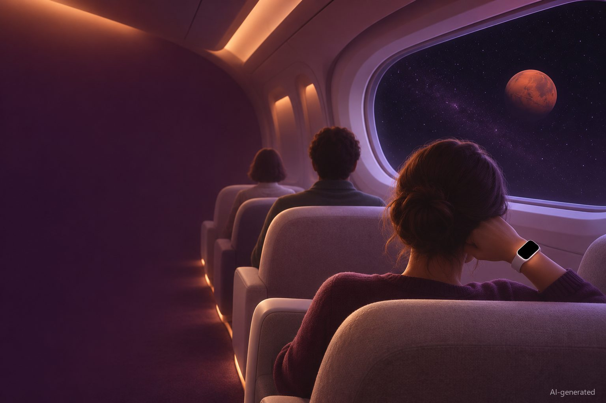</figure>

    <article class="dip rv">
      <figure class="m wide s4" id="s4">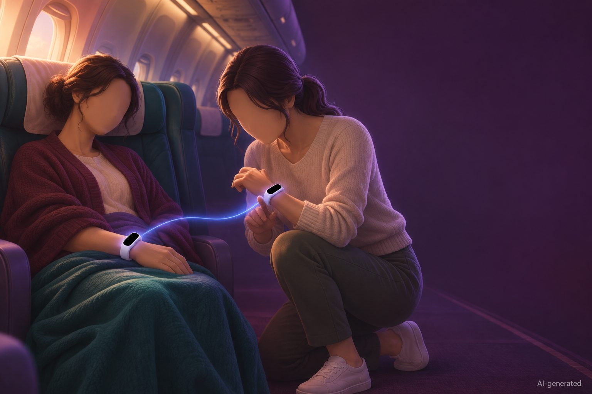</figure>
      <figure class="m detail obj"><span class="ai">AI-generated</span></figure>
      <div class="txt">
        <p class="label">Case 01 · Cannot act</p>
        <h3 class="prop">The nearest passenger becomes the help</h3>
        <p class="note">When the chest band and wristband read a fall or no response, Eva calls the closest passenger and walks them through each step on their own wristband. Everyone else gets a quiet notice.</p>
      </div>
    </article>

    <article class="dip flip rv">
      <figure class="m wide station" id="station" aria-label="Shared station with three bays; Eva lights the one to use.">
        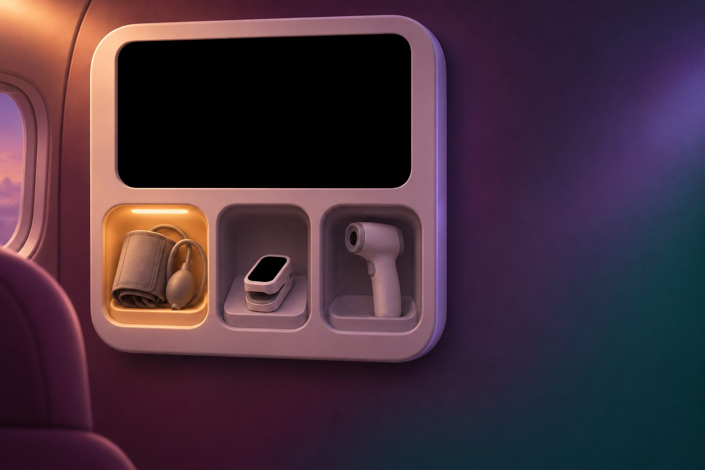
        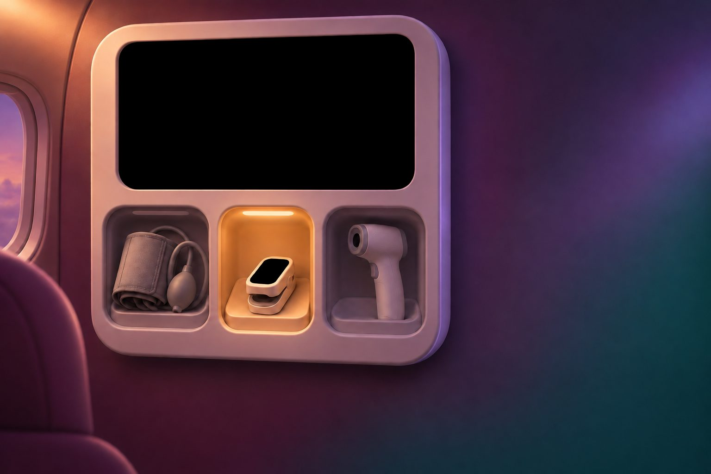
        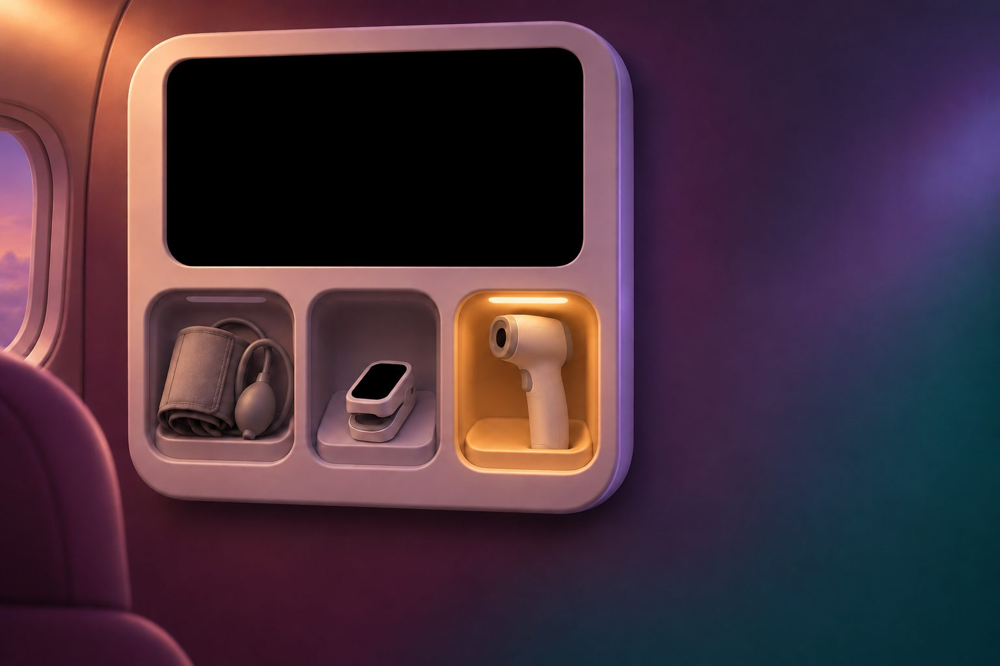
        <div class="scr" aria-live="polite"><small>Station 2 · Eva</small><span id="scr">Wrap the cuff on your left arm</span></div>
        <span class="ai">AI-generated</span>
      </figure>
      <figure class="m detail obj">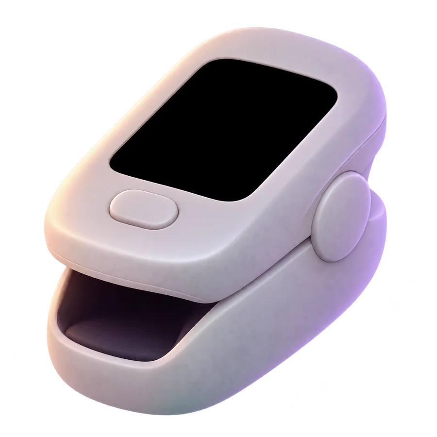<span class="ai">AI-generated</span></figure>
      <div class="txt">
        <p class="label">Case 02 · Can act</p>
        <h3 class="prop">The station lights the right tool</h3>
        <p class="note">Eva walks the passenger to the shared station. The bay they need glows amber and the screen shows how to use it, one step at a time.</p>
        <div class="bays" role="group" aria-label="Lit bay">
          <button type="button" id="bay0" aria-pressed="true">Cuff</button>
          <button type="button" id="bay1" aria-pressed="false">Oximeter</button>
          <button type="button" id="bay2" aria-pressed="false">Thermometer</button>
        </div>
      </div>
    </article>

    <article class="dip rv">
      <figure class="m wide s3">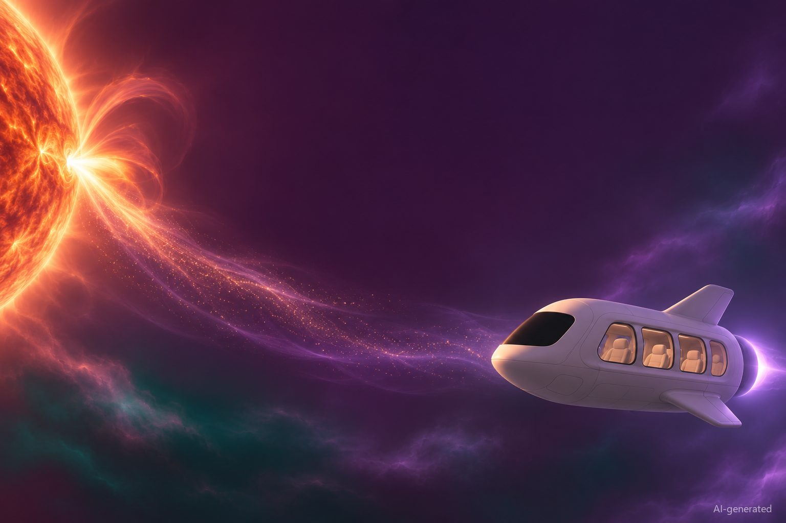</figure>
      <figure class="m detail obj">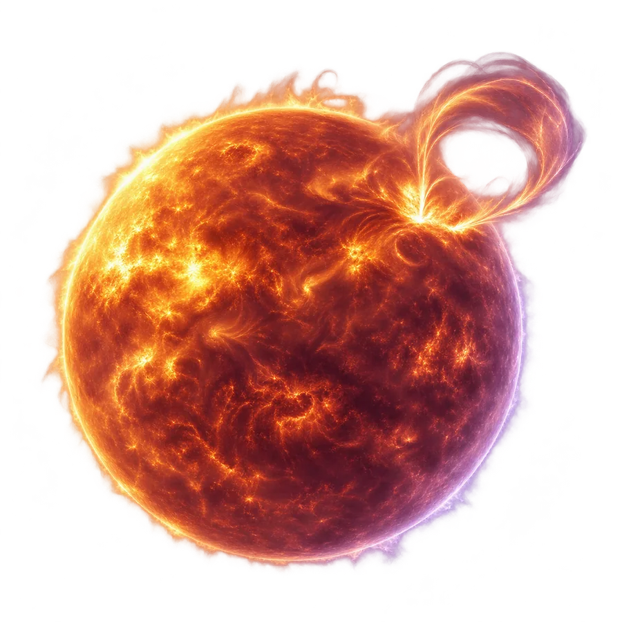<span class="ai">AI-generated</span></figure>
      <div class="txt">
        <p class="label">Solar alert</p>
        <h3 class="prop">Minutes of warning before the particles arrive</h3>
        <p class="note">Eva reads NASA DONKI flare reports and NOAA GOES proton data. X-rays arrive with the light; the particles that follow leave time to reach the shelter, and each wristband shows the way.</p>
      </div>
    </article>

    <article class="dip flip rv">
      <figure class="m wide s5">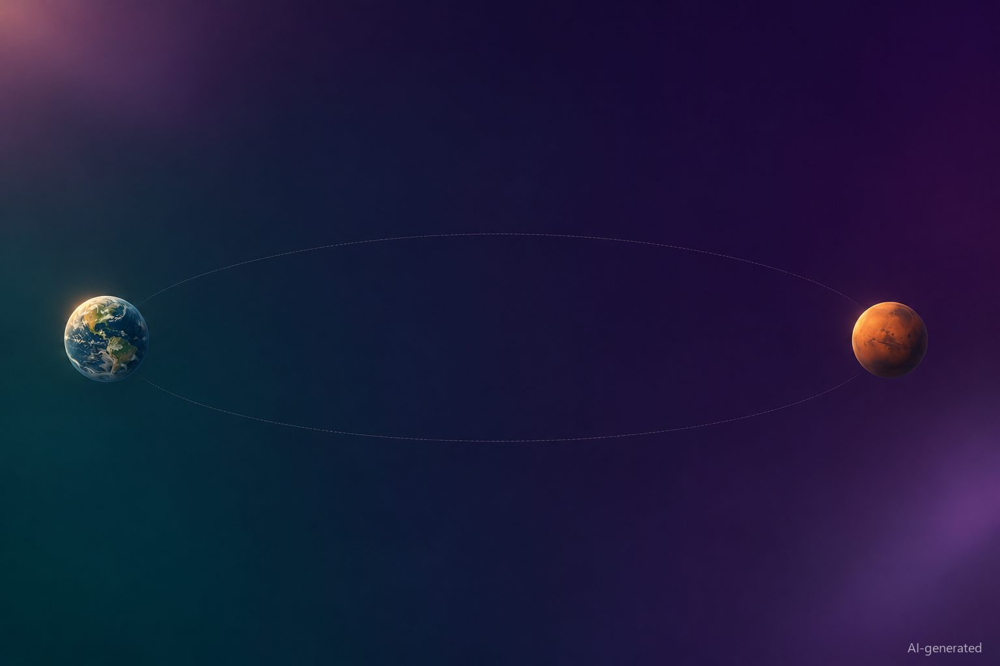
        <svg viewBox="0 0 1536 1024" aria-hidden="true"><path id="arc" d="M222 470 C 520 330, 1020 330, 1318 478 C 1020 700, 520 700, 222 572" fill="none" stroke="rgba(249,247,244,.42)" stroke-width="2" stroke-dasharray="2 9"/><circle class="pulse" r="7" fill="#f9f7f4"><animateMotion dur="7s" repeatCount="indefinite" rotate="auto"><mpath href="#arc"/></animateMotion></circle></svg>
      </figure>
      <figure class="m detail obj">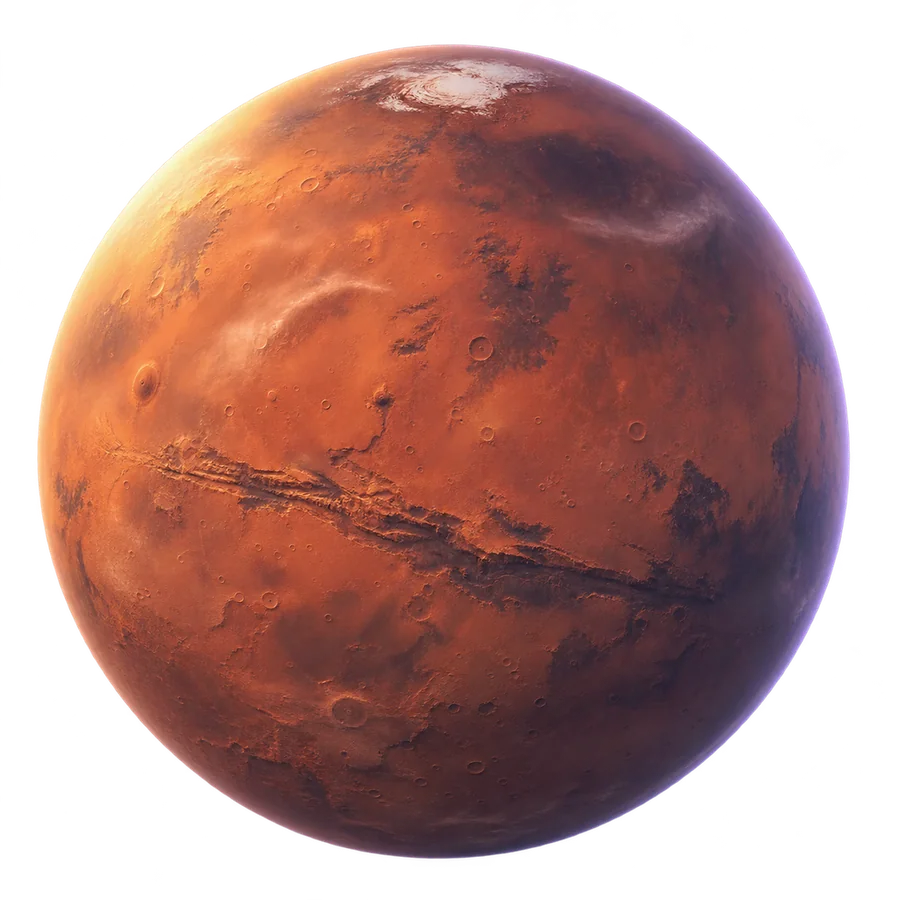<span class="ai">AI-generated</span></figure>
      <div class="txt">
        <p class="label">Earth link</p>
        <h3 class="prop">Every step recorded, even twenty minutes from Earth</h3>
        <p class="note">Each step is chained and signed on board, then sent to Earth with confirmation of receipt. The one-way delay to Mars runs from 3 to 22 minutes, so the first minute has to work without it.</p>
      </div>
    </article>
  </section>

  <section class="g" aria-labelledby="why">
    <div class="sh"><h2 id="why">Why it matters</h2></div>
    <div class="ed rv">
      <p class="prop">Care that does not wait for a doctor</p>
      <div class="body">
        <p>Around 70% of astronauts on six-to-twelve-month missions aboard the ISS show significant vision changes, and 85% of 71 astronauts reported at least one nasal or sinus problem. On a commercial flight to Mars most passengers will not be clinicians, and the nearest doctor may be twenty minutes away by radio.</p>
        <p>We built Eva on NASA's open Inspiration4 data (OSDR OSD-575 and OSD-569). Measured against each crew member's own baseline, the metabolic panel the day after landing showed 16 of 72 changes, against 7 using standard laboratory ranges.</p>
        <p>Eva guides, records and warns. It does not diagnose or treat; protocols come first, and every decision stays with people.</p>
      </div>
    </div>
  </section>

  <section class="g" aria-labelledby="kit">
    <div class="sh"><h2 id="kit">WearMeds</h2><button class="act" type="button" id="specs" aria-expanded="false">Details</button></div>
    <div class="inv rv">
      <ul id="list">
        <li><button type="button" data-img="a/l2.webp" data-alt="WearMeds chest band.">Chest band</button><small hidden>ECG and breathing, worn all trip</small></li>
        <li><button type="button" data-img="a/l1.webp" data-alt="WearMeds wristband.">Wristband</button><small hidden>Pulse, movement and a large screen for each step</small></li>
        <li><button type="button" data-img="a/l3.webp" data-alt="Shared medical station.">Shared station</button><small hidden>One per cabin, three lit bays and a guidance screen</small></li>
        <li><button type="button" data-img="a/l4.webp" data-alt="Pulse oximeter.">Pulse oximeter</button><small hidden>Blood oxygen, from the centre bay</small></li>
        <li><button type="button" data-img="a/l5.webp" data-alt="Blood pressure cuff.">Blood pressure cuff</button><small hidden>Automatic reading once the cuff is closed</small></li>
        <li><button type="button" data-img="a/l6.webp" data-alt="Infrared thermometer.">Thermometer</button><small hidden>Contactless temperature</small></li>
      </ul>
      <figure class="m obj pv" id="pv"><span class="ai">AI-generated</span></figure>
    </div>
  </section>

  <section class="g" aria-labelledby="model">
    <div class="sh"><h2 id="model">Business</h2></div>
    <div class="ed rv">
      <p class="prop">Hardware once, Eva every mission</p>
      <div class="body">
        <p>Operators buy a WearMeds kit for each passenger and a station for each cabin. Eva is licensed per mission, so every new flight renews it.</p>
        <p>Bands come in sizes and finishes, the station takes new bays, and the same platform serves orbital stays, lunar bases and remote work on Earth, from Antarctic crews to river and rural workers far from a doctor.</p>
      </div>
    </div>
  </section>

  <section class="g close" id="contact" aria-labelledby="inv">
    <div class="sh"><h2>Contact</h2></div>
    <p id="inv">To see Eva working or to discuss a mission, start here:</p>
    <ul>
      <li><a href="https://claude.ai/artifact/DjrUadizcmVevJFVpCqR4m">Open the prototype <svg viewBox="0 0 46 46" aria-hidden="true"><path d="M10 36 36 10M14 10h22v22" fill="none" stroke="currentColor" stroke-width="3"/></svg></a></li>
      <li><a href="https://osdr.nasa.gov/bio/repo/data/studies/OSD-575">Inspiration4 data on NASA OSDR <svg viewBox="0 0 46 46" aria-hidden="true"><path d="M10 36 36 10M14 10h22v22" fill="none" stroke="currentColor" stroke-width="3"/></svg></a></li>
    </ul>
  </section>
</main>

<footer class="foot g">
  <p class="notice" id="ai">Images are AI-generated concept art made with an OpenAI image model through Codex, from prompts by team Sanjo-X written with Claude. They contain no NASA insignia or branding. Eva is a hackathon concept for NASA Space Apps Challenge 2026 and is not a medical device.</p>
  <div class="mark"><svg viewBox="0 0 1400 120" role="img" aria-label="Eva by WearMeds"><text x="0" y="104" textLength="1400" lengthAdjust="spacingAndGlyphs" fill="currentColor" font-family="PP Neue Montreal, Inter, Arial, sans-serif" font-size="132" letter-spacing="-1">Eva by WearMeds</text></svg></div>
  <div class="util"><span>© 2026 Sanjo-X · Space Apps Rosario</span><ul><li><a class="u" href="#ai">AI notice</a></li><li><a class="u" href="https://ccmc.gsfc.nasa.gov/tools/DONKI/">Data sources</a></li></ul></div>
</footer>

<script>
(()=>{
  const reduce=matchMedia('(prefers-reduced-motion: reduce)').matches;
  // Soft reveal for elements that start below the fold
  const rv=[...document.querySelectorAll('.rv')];
  if(!reduce && 'IntersectionObserver' in window){
    const io=new IntersectionObserver(es=>es.forEach(e=>{if(e.isIntersecting){e.target.classList.remove('pre');e.target.classList.add('in');io.unobserve(e.target)}}),{rootMargin:'0px 0px -10% 0px'});
    rv.forEach(el=>{if(el.getBoundingClientRect().top>innerHeight){el.classList.add('pre')}io.observe(el)});
    const s4=document.getElementById('s4');
    new IntersectionObserver(es=>es.forEach(e=>s4.classList.toggle('in',e.isIntersecting)),{threshold:.55}).observe(s4);
  } else { rv.forEach(el=>el.classList.add('in')); document.getElementById('s4').classList.add('in'); }

  // Station: cycle the lit bay and the instruction on its screen
  const frames=[...document.querySelectorAll('#station .f')];
  const scr=document.getElementById('scr');
  const copy=['Wrap the cuff on your left arm','Clip the oximeter on a finger','Hold the thermometer near the forehead'];
  const btns=[0,1,2].map(i=>document.getElementById('bay'+i));
  let cur=0,timer=null,visible=false;
  function show(i){
    cur=i;
    frames.forEach((f,k)=>f.classList.toggle('on',k===i));
    frames[0].style.opacity=i===0?'':'0';
    btns.forEach((b,k)=>b.setAttribute('aria-pressed',String(k===i)));
    scr.style.opacity=0;
    setTimeout(()=>{scr.textContent=copy[i];scr.style.opacity=1},reduce?0:250);
  }
  function run(){ if(timer||reduce||!visible) return; timer=setInterval(()=>show((cur+1)%3),2800); }
  function halt(){ clearInterval(timer); timer=null; }
  btns.forEach((b,i)=>b.addEventListener('click',()=>{halt();show(i)}));
  if('IntersectionObserver' in window){
    new IntersectionObserver(es=>es.forEach(e=>{visible=e.isIntersecting; visible?run():halt()}),{threshold:.4}).observe(document.getElementById('station'));
  }

  // Inventory: floating preview follows the focused name
  const pv=document.getElementById('pvimg');
  document.querySelectorAll('#list button').forEach(b=>{
    const go=()=>{ if(pv.getAttribute('src')===b.dataset.img) return; pv.style.opacity=0; setTimeout(()=>{pv.src=b.dataset.img;pv.alt=b.dataset.alt;pv.style.opacity=1},reduce?0:180); };
    b.addEventListener('mouseenter',go); b.addEventListener('focus',go); b.addEventListener('click',go);
  });
  const specs=document.getElementById('specs');
  specs.addEventListener('click',()=>{
    const open=specs.getAttribute('aria-expanded')!=='true';
    specs.setAttribute('aria-expanded',String(open));
    specs.textContent=open?'Less':'Details';
    document.querySelectorAll('#list small').forEach(s=>s.hidden=!open);
  });
})();
</script>
